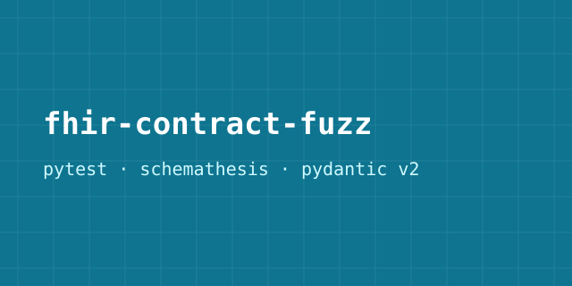
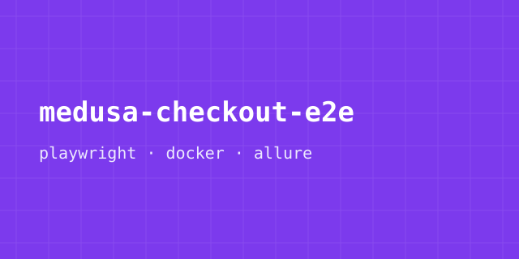
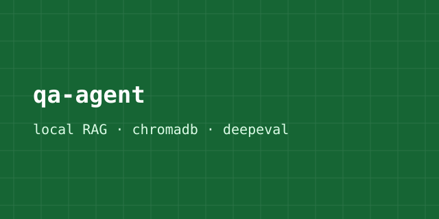

mimik agentic-native platform
The agentic AI platform and mimOE runtime behind the on-device AI health app I test every day.
Read about the platformHi, I'm
Senior QA Engineer | SDET
I test AI systems for a living: agent behavior, model output, and RAG pipelines. Backed by 7+ years across automation, API, and insurance-domain QA.
I'm a Quality Engineer at mimik, where I help ensure the quality of an on-device AI health application built on a multi-agent architecture. My work focuses on validating AI agent behavior, model responses, and the end-to-end ingestion of health data from Apple HealthKit.
I enjoy finding bugs before customers do, but even more, I enjoy building tools that help teams find them faster. Whether it's creating automation frameworks, writing API tests, or developing utilities that make testing easier, I like solving quality problems through engineering.
Over the past 7+ years, I've worked across functional testing, test automation, API testing, and AI quality engineering. I enjoy collaborating with developers to build reliable software and deliver products with confidence.
I'm currently open to SDET and QA Automation opportunities in Vancouver, Toronto, Calgary, and Dallas-Fort Worth.
Vancouver · March 2026 - Present
Vancouver · Aug 2025 - Feb 2026
Edmonton · Nov 2022 - Dec 2024
Edmonton · Sept 2021 - Nov 2022
India · Mar 2016 - Aug 2019
Real products in production, with public references.
The agentic AI platform and mimOE runtime behind the on-device AI health app I test every day.
Read about the platformAI-powered product discovery and one-tap checkout: the autonomous shopping flows my team validated.
Read Meta's announcementThe Guidewire Cloud implementation I led QA on, covered by Canadian Underwriter.
Read the coverageUniversity of Alberta · 2021
GITAM University · 2015
June 2025
2024
2024
2018

Contract and fuzz testing framework for FHIR R4 healthcare APIs. PyTest, Schemathesis, pydantic v2, CI-gated (in active development).
View on GitHub
Playwright E2E suite for an open-source commerce platform. Dockerized SUT, PR-gated CI (in active development).
View on GitHub